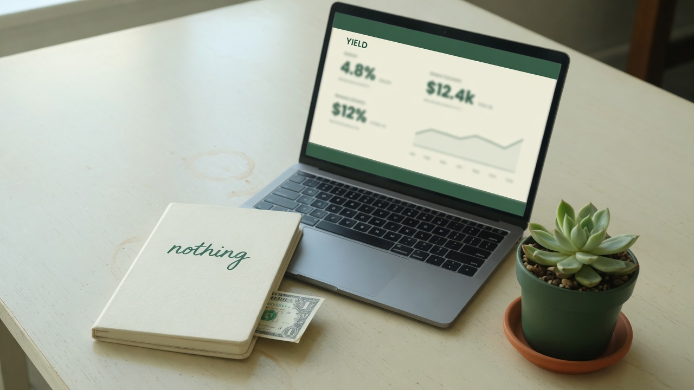
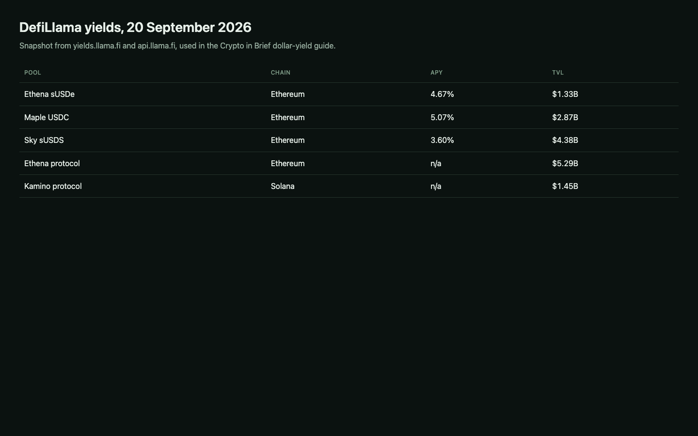
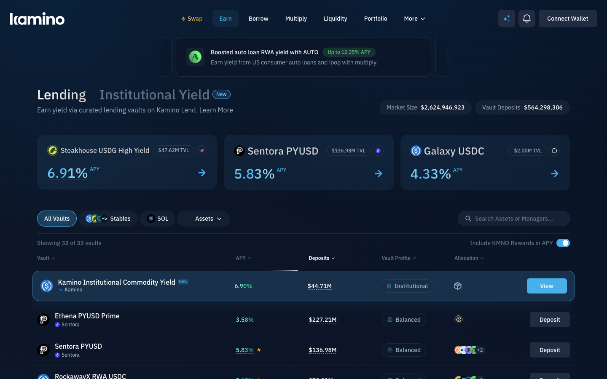
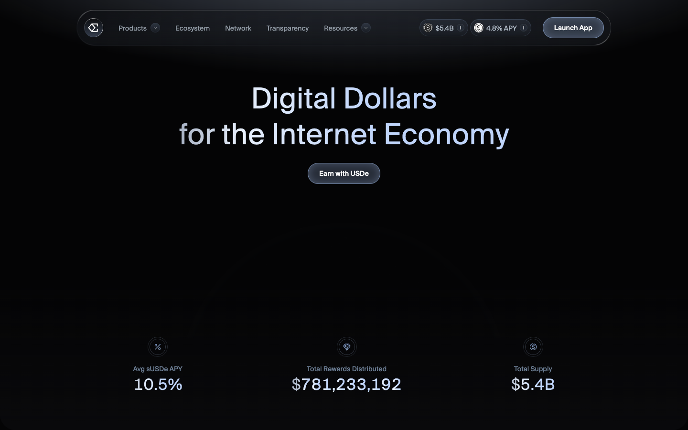
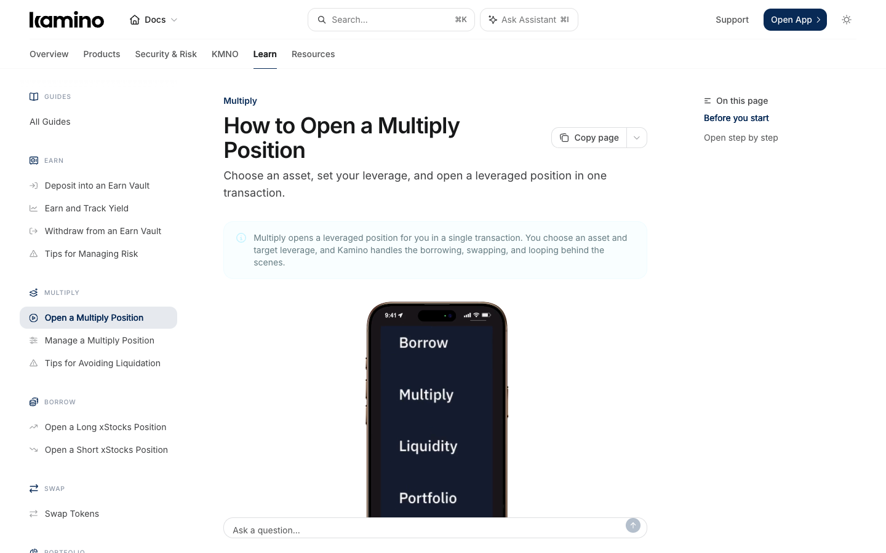
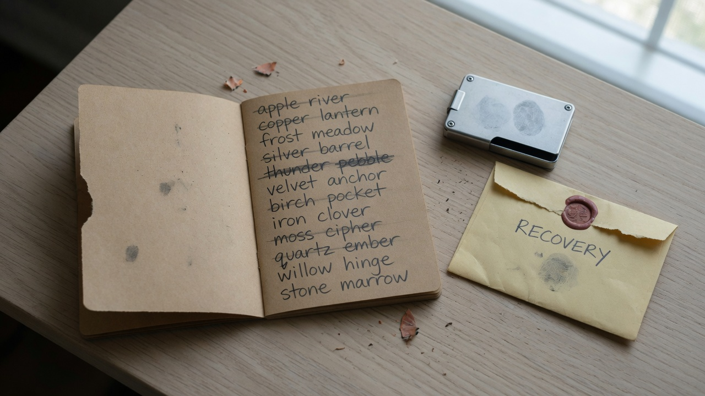

How to hunt dollar yield in DeFi without pretending it is a bank.
Stable here means “aims at a dollar.” It does not mean a deposit, a locked rate, or a promise that next month looks like this one.
This guide contains an Ethena referral link. I may receive a benefit if you use it. That relationship does not change the yield, custody or liquidation risks below. Numbers are from 20 September 2026 and will move. This is not financial advice.
What “stable money” can honestly mean here

On-chain dollar yield is a payment you receive for taking a specific risk: funding-rate risk, borrower default, smart-contract bugs, oracle failure, issuer freeze, or liquidation. Treasury-backed tokens such as some tokenized cash funds sit at one end. Looping a volatile LST sits at the other. I treat anything above a short-term government bill rate as compensation for something that can fail.
You need a wallet first. If you do not yet have one, use the starter guide. Then you need a way to compare live rates instead of screenshots from Twitter.
DefiLlama is where I read the yield


defillama.com/yields lists pools with APY, TVL, the chain, and whether the rate is base yield or a temporary incentive. I sort by TVL first, then look at APY. A 4% pool with a billion dollars in it is a different object from a 40% pool with a million.
Checked 20 September 2026 via the DefiLlama yields API:
| Pool | Chain | APY | TVL |
|---|---|---|---|
| Ethena sUSDe | Ethereum | 4.67% | $1.33B |
| Maple USDC | Ethereum | 5.07% | $2.87B |
| Sky sUSDS | Ethereum | 3.60% | $4.38B |
| Ethena protocol TVL | mostly Ethereum | n/a | $5.29B |
| Kamino protocol TVL | Solana | n/a | $1.45B |
Those APYs are already in percent on DefiLlama. They are not a forecast. Filter for stablecoin pools if you want dollar-denominated risk, then click through to the protocol and read how the yield is produced. DefiLlama will also show a protocol’s historical TVL at defillama.com/protocol/ethena and /kamino.
Source: yields.llama.fi/pools and api.llama.fi/protocol/ethena, pulled 20 September 2026.
Ethena: USDe, sUSDe and where the yield comes from

USDe is Ethena’s synthetic dollar. The protocol holds backing assets and, for anything volatile, opens a short perpetual futures position of about the same size. Spot goes up, the short loses; spot goes down, the short gains. That delta-neutral book is how USDe aims to stay near a dollar without being a bank deposit. Stable backing (cash-like assets) does not need the hedge. Source: How USDe Works.
sUSDe is staked USDe. You send USDe in, you receive sUSDe, and the USDe value of sUSDe rises when the Foundation’s subsidiary deposits rewards. The staked USDe is not lent out to produce that yield. The yield is the protocol’s revenue, mainly funding rates collected on those short perpetual positions, plus other sources the docs name. In a week when funding is negative, sUSDe is not supposed to go backwards; the reserve fund is meant to absorb the loss and rewards simply pause. That is a design goal, not a guarantee.
On 20 September 2026, DefiLlama’s Ethereum sUSDe pool showed 4.67% APY on $1.33B TVL. Ethena’s own site the same day showed a 4.8% APY badge and a 10.5% “Avg sUSDe APY”. The average is a longer window. Ethena also warns that aggregator sites which annualize the latest eight-hour reward payment will disagree with the official weekly-compounded figure. Unstaking sUSDe has a cooldown that the docs describe as currently between 1 and 7 days, set by governance and reserve conditions.
Use the app at app.ethena.fi/join/urfcl. Read the live APY there before you size anything. Funding rates in 2024 produced double-digit sUSDe APYs. 2026 has been a quieter funding tape. That swing is the product.
Kamino Finance and looping


Kamino is Solana’s large lending and vault venue. DefiLlama showed about $1.45B of protocol TVL on 20 September 2026. You can supply assets, borrow against them, or open a Multiply vault that does the looping for you.
Looping, in this context, is: supply a yield-bearing asset as collateral, borrow the underlying, swap or stake that borrow back into the yield-bearing asset, and supply again. Each turn raises your exposure to the collateral’s yield and to its price. It also raises your loan-to-value ratio. If the collateral falls, or if the borrow rate rises above the yield for long enough, the protocol can sell you out. That sale is liquidation.
A common Solana loop is JitoSOL (or another LST) supplied, SOL borrowed, more LST bought, supplied again. eMode on correlated pairs raises the allowed loan-to-value, which means higher leverage and a thinner buffer to liquidation. Kamino’s docs are explicit: borrow rates are variable, and if they exceed collateral yield for a stretch, net APY goes negative while debt still grows.
Open Kamino at kamino.finance. If you use Multiply, start at 1.5x or 2x on a pair you understand, and watch the liquidation price the UI prints. A 10x LST loop is not “stable money.” It is a leveraged bet that the LST stays pegged and that borrow stays cheap.
What I actually do with this
I read DefiLlama, I ignore pools whose TVL would not survive my withdrawal, and I treat Ethena sUSDe as a funding-rate product that happened to print about 4.7% on the day I checked, not as a savings account. I treat Kamino looping as optional leverage on top of a Solana lending book, not as a way to manufacture a safe 15%.
If a number on this page is more than a few days old, replace it. The links above are the live sources. The wallet and explorer habits from the starter guide still apply: test with a small amount, confirm the transaction, then decide whether the risk is one you meant to take.